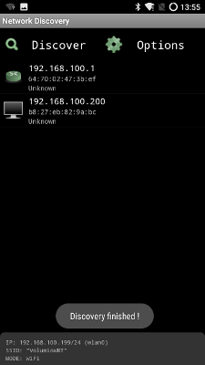
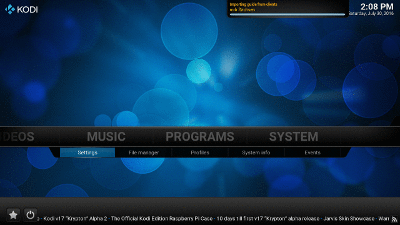
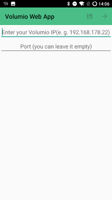

Volumio Steuern mit dem Handy
Es gibt eine Reihe von android Clients mit denen man den Raspberry Pi mit Volumio steuern kann.
Hier meine Erfahrungen damit.

Volumio Steuerung per Web-Oberfläche
Num, als erstes braucht man die IP Addresse des Raspberry Pi Volumio Servers. Wenn man diese nich hat, kann ich das Programm Network Discovery aus dem Google Play™ Store empfehlen.
Network Discovery nach der Ausführung
Wie hier schön zu sehen ist, liegt mein Raspberry Pi auf der IP 192.168.100.200, die IP 192.168.100.1 ist der TP-Link® TL-MR3020 Wireless Access Point.
Aufruf per Google Chrome™ Browser
Im Google Chrome™ Browser kann man eine Verknüpfung auf dem Android™ Bildschirm legen. Das ist wie ich finde für die schnelle Benutzung z.B. lauter, leiser und weiter der einfachste und schnellste Weg.
Eine ganz klare einfache Empfehlung!
Aufruf per Droid MPD Client
Der Droid MPD Client ist super, übersichtlich und schnell zu installieren. Einen kleinen Schönheitsfehler hat er aber. Volumio läßt sicht nicht herunterfahren.
Sonnst aber die Empfehlung bei den Clients, wenn man nicht viele Orte mit Raspberry Pi Clients und Volumio ausgestattet hat.
Aufruf per Sound@home for Volumio Client
Nun ja, die Empfehlung, wenn man mehr als einen Ort mit Raspberry Pi Clients und Volumio ausgestattet hat. Zudem kann man NAS Adressen hinzuf¨gen und die Geräte ein und aussschalten.
Lasst euch nicht vom Einrichtiungs Client fehlleiten, wenn WLAN schon verbunden ist, reicht es LAN zu nehmen!
Einrichtung und Ansicht in KODI
Also, sieht gut aus, wenn man ein großes Display hat, aber ist nicht zwingend notwendig. Zudem auch hier das neustarten und ausschalten nicht vorhanden ist.
Einrichtung und Ansicht in der Volumio Web App
Es scheint, als würde dort ein Broswer aufgerufen werden. Die Einstellungen kann man nur bis zum schließen der Anwendung speichern. Ok, man kann auch hier ausschalten und neustarten, aber warum sollte ich denn dann nicht einen anderen Browser nehmen?
So, das war es auch schon. Unter Linux und Windoes gibt es natürlich auch noch Software, aber ich denke, dies ist der bequemste Weg seine Stereoanlage mit MP3's zu füttern.